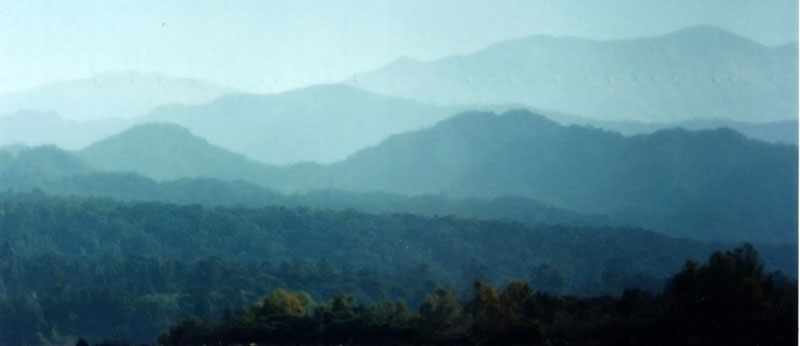

Relato Una Semana de descubrimiento en Jujuy, visitando el Parque Nacional Calilegua y la Puna Texto y fotos por: Alejandro Earnshaw Aportes de Nicolás Earnshaw Copyright 2000 Volver a la Página de Selección de Relatos Volver a la Página Principal Vuelco mi experiencia personal de un magnífico "Safari" a Jujuy, organizado por Aves Argentinas (la conocida "Asociación Ornitológica del Plata", o AOP) en Julio de 2000. Pasamos 4 días en las exuberantes selvas de montaña, o "Yungas", del Parque Nacional Calilegua, y luego dos días en la árida Quebrada de Humahuaca, visitando lagunas en la alta puna. El objetivo principal del viaje era efectuar avistamiento de aves. Mi mejor foto de este viaje: Vista de las montañas de Calilegua
tomadas contra el sol desde el valle del San Lorenzo  Parte 1: Alternativa (A):
Volver a la Página Principal |